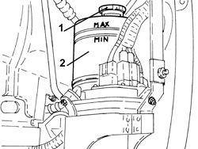

0010T71 POWER STEERING FLUID CHECK LEVEL AND TOP UP IF NECESSARY
- Path
- Procedures > 00 MAINTENANCE > 0010 NEW VEHICLES AND MAINTENANCE > 0010T VEHICLE FLUIDS > 0010T71 POWER STEERING FLUID CHECK LEVEL AND TOP UP IF NECESSARY
- Kind
- repair procedure (removal / refitting; the operation number is the code)
- Applies to
- all engines; all production periods
- Interactive page
- https://sloeber94.github.io/elrnDB-fCrm/en/#/194000219
Applies to: engines: 2.2; all production periods
- After operations for which the power assisted steering hydraulic system has been opened, refill the hydraulic system following the instructions given below.
- Position the vehicle on a lift.
Op. 4450B02 LEFT FRONT WHEEL - R.R
Op. 7055B90 LEFT FRONT WHEEL ARCH LINER - R.R.
1. Remove the power steering fluid reservoir plug.
2. Refill using the recommended power assisted steering fluid until the MAX mark on the reservoir is reached.
Component | Type | Description | Classification | Qty. | Validity |
|---|---|---|---|---|---|
POWER ASSISTED STEERING CIRCUIT | Synthetic fluid | TUTELA GI/R | - | 0.900 litres | 2.2 |

Applies to: engines: 2.2; all production periods
Op. 0010T75 HYDRAULIC POWER STEERING SYSTEM BLEED AIR
Op. 7055B90 LEFT FRONT WHEEL ARCH LINER - R.R.
Op. 4450B02 LEFT FRONT WHEEL - R.R
- Remove the vehicle from the lift.
Applies to: engines: 1.8, 1.9 JTD 8v, 1.9 JTD 16v, 2.4 JTD 20v; all production periods
- After operations for which the power assisted steering hydraulic system has been opened, refill the hydraulic system following the instructions given below.
Op. 1016A10 SOUND-PROOFING COVER - R.R
- Remove the power steering fluid reservoir plug.
- Refill using the recommended power assisted steering fluid until the MAX mark on the reservoir is reached.
Component | Type | Description | Classification | Qty. | Validity |
|---|---|---|---|---|---|
POWER ASSISTED STEERING CIRCUIT | Synthetic fluid | TUTELA GI/R | - | 0.63 - 0.72 litres | 1.8 1.9 JTD 8V 1.9 JTD 16V 2.4 JTD 20V |
Topics linked from this page (4)
- 0010T75 HYDRAULIC POWER STEERING SYSTEM BLEED AIR
- 1016A10 SOUND-PROOFING COVER - R.R
- 4450B02 LEFT FRONT WHEEL - R.R
- 7055B90 LEFT FRONT WHEEL ARCH LINER - R.R.
Topics that link to this page (12)
- 0010K30 30,000KM SERVICE
- 0010K60 60,000KM SERVICE
- 0010K90 90,000KM SERVICE
- 0010M20 120,000KM SERVICE
- 0010M50 150,000KM SERVICE
- 0010M80 180,000KM SERVICE
- 0010T75 HYDRAULIC POWER STEERING SYSTEM BLEED AIR
- 1020D14 FRONT CRANKSHAFT OIL SEAL COVER - R.R AND REPLACE SEALS FOR VERSIONS WITH OIL PUMP ON CRANKSHAFT, TIMING SIDE
- 4130B25 POWER STEERING PUMP ASSEMBLY R R FOR VERSIONS WITH AIR CONDITIONER
- 4130B32 POWER STEERING PUMP SUPPORT - R R
- 4130B40 SUPPLY PIPE FROM PUMP TO POWER STEERING BOX - R.R.
- 4130B42 RETURN PIPE FROM POWER STEERING BOX TO POWER STEERING FLUID RESEVIOR - R.R.